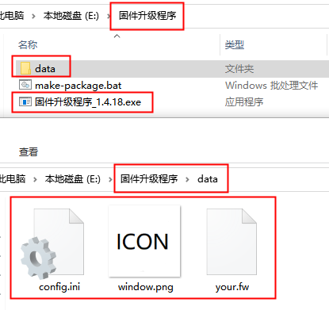
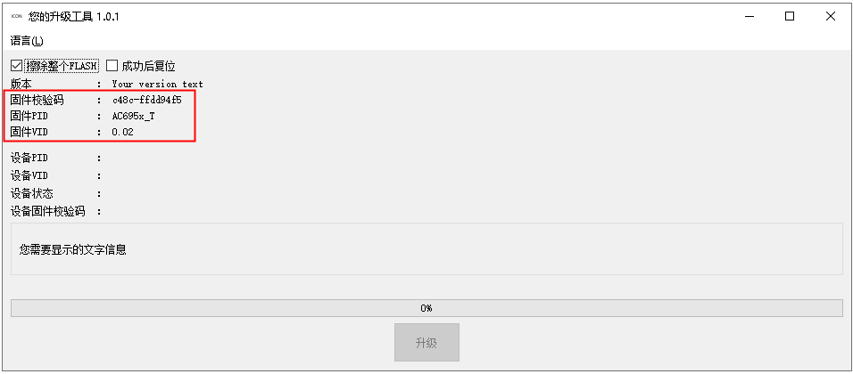
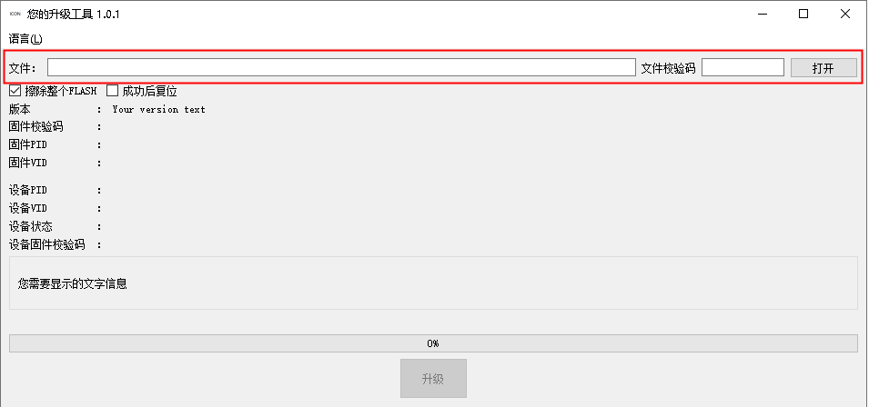
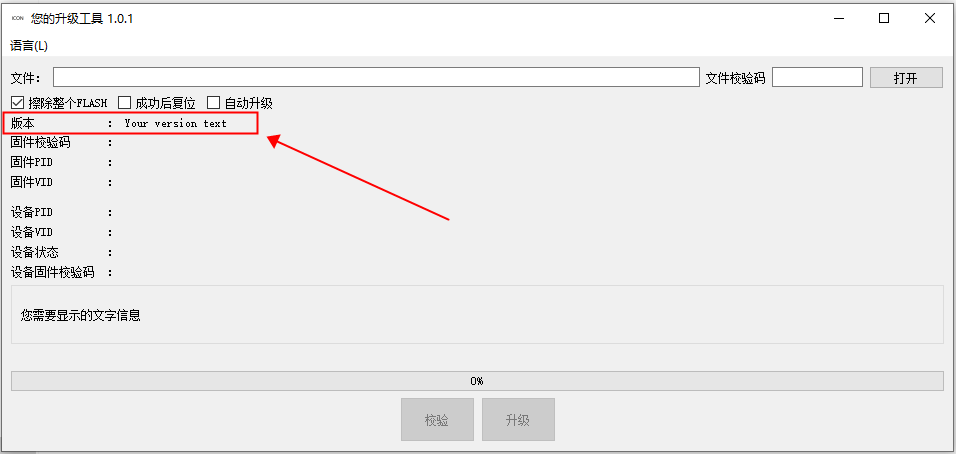
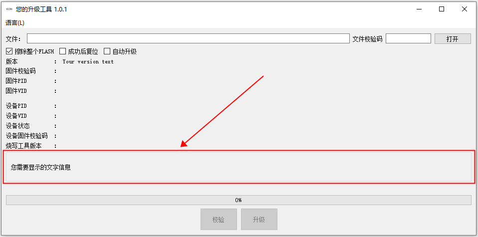
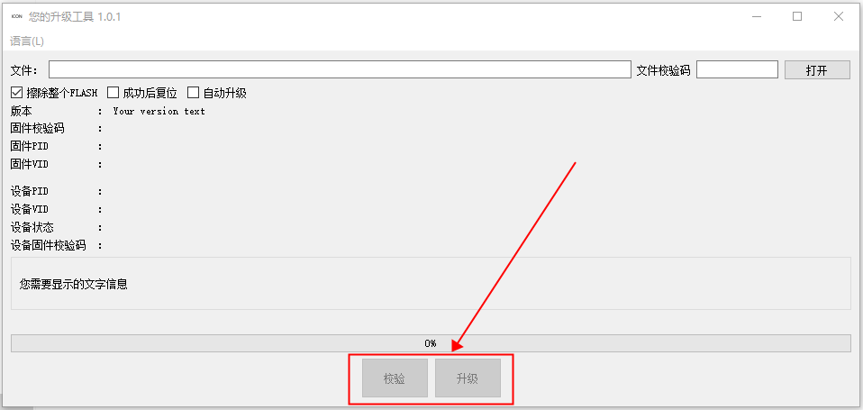

1.1.1.1.1. Configuration Items
Important
The configuration file must be saved with UTF8 encoding.
The configuration file config.ini must be stored in the data directory located in the same directory as the tool. Files to be merged into the tool must also be stored in the data directory, as shown below:

File directory structure
All text in this tool's interface can be configured through configuration items, in both Chinese and English. Chinese and English text are configured with the *text_cn and *text_en items respectively.
1.1.1.1.2. Merging the Firmware File into the Tool
The configuration items for this function are as follows:
###########################################
#
# Firmware file to be merged into the tool
# Firmware file used for the upgrade
# Takes effect after the firmware file has been merged into the tool
#
###########################################
[Firmware]
value = your.fw
This configuration item takes effect only after the firmware file and the data/config.ini file have been merged into the tool together. When merging the firmware file, also put the firmware file in the data directory and set Firmware/value to the name of the firmware file to be merged. See the figure File directory structure.
When the files are ready, run the following on the command line
固件升级程序_1.4.18.exe --merge data --target 固件升级程序_1.4.18_包含固件.exe
to merge the data directory into the tool, as shown below:

固件升级程序_1.4.18_包含固件.exe is the new tool that contains the firmware file after the merge.
Run the merged tool 固件升级程序_1.4.18_包含固件.exe. The firmware is loaded into the tool automatically and the file selector is hidden, as shown below:

1.1.1.1.3. PC-Mode Device Name
The configuration items for this function are as follows:
#########################################
#
# Names of devices that can be upgraded in PC mode
#
#########################################
[PCMode]
name_list = br23udisk ;List of names of devices that can be upgraded
wait_time = 1000 ;Time to wait for the device to switch from PC mode to upgrade mode
If the device cannot enter upgrade mode directly but has a PC mode, and the SDK supports it, this configuration can be used to switch the device from PC mode to upgrade mode to complete the firmware upgrade.
Taking AC695X as an example, after a device running the standard SDK firmware enters PC mode, the device BR23 UDISK USB Device appears in the Windows Device Manager. BR23UDISK (without the space in the middle) is then the PC-mode name of this device, as shown below:

This name can be configured with SCSIInquiryData in the SDK file apps/common/usb/device/msd.c, as shown below:

Note
If no device with UDISK in its name can be found in Device Manager, the current SDK may not support the standard command for switching the device from PC mode to upgrade mode.
In that case, the device firmware developer needs to implement their own trigger for switching from PC mode to upgrade mode. For example, the device can call the go_mask_usb_updata function in the SDK to enter upgrade mode when it detects that a certain button has been pressed.
1.1.1.1.4. PID Display and Matching Rules
In many cases, a developer has several device models being evaluated at a third party. To prevent devices with different hardware from being upgraded with the wrong firmware, you can use PID matching rules to restrict which devices can be upgraded. The configuration items for this function are as follows:
#########################################
#
# PID display and matching rule configuration
#
#########################################
#
# PID matching
#
[PidMatch]
enable = true ; Whether to match the PID. If the PID does not match, programming is not allowed
pid_mismatch_text_cn = "设备PID与固件PID不匹配！"
pid_mismatch_text_en = "The device PID does not match the firmware PID!"
#
# Device PID whitelist
# If the device's PID is in the whitelist,
# the device PID is ignored during the upgrade
#
[PidWhiteList]
value = AC695x_TWS,None
#
# Pid mapping table, displays the actual Pid as the specified Pid
#
[PidMapping]
OLD PID = NEW PID
AC695x_TWS = NewPid
#
# Parameters added for compatibility with old SDKs
# PID parsing, valid for AC691X and for AC692X SDK V1
# Split "PDCTNAME=" in the configuration into two parts at the first separator
# The first part is displayed as the PID, the second as the VID
#
[PidSection]
sep = _ ; Separator, underscore by default
If PID matching is enabled and the firmware PID does not match the device PID, the tool displays the text set in the PidMatch/pid_mismatch_text_?? configuration, as shown below:

1.1.1.1.5. Upgrade Options
The configuration items for this function are as follows:
######################################
#
# Option configuration
#
######################################
[EraseAll]
text_cn = 擦除整个FLASH
text_en = Reaset Entire Flash
checked = true ; Whether checked by default
[Reset]
text_cn = 成功后复位
text_en = Reset After Success
checked = false ; Whether checked by default
[AutoUpgrade]
text_cn = 自动升级
text_en = Auto Upgrade
visible = true ; Whether to display
checked = true ; Whether checked by default, valid only when "visible=true"
The effect of the above configuration in the tool's interface is shown below:

1.1.1.1.6. Window Title Bar Text and Icon
The configuration items for this function are as follows:
###########################################
#
# Window menu bar information configuration
#
###########################################
[Title]
text_cn = 您的升级程序 1.0.1 ;Chinese title text
text_en = YOUR UPGRADE TOOL 1.0.1 ;English title text
icon_file = window.png ;Title bar icon, supports png and jpg file formats
[Menu]
visible = true ;Whether to display the top menu bar
language = english ;Default language, only Chinese and English are supported (chinese,english)
[Window]
width = 750 ;Minimum window width
#height = 400 ;Minimum window height
width_fixed = false ;Whether the width is fixed
height_fixed = false ;Whether the height is fixed
The effect of the above configuration in the tool's interface is shown below:

1.1.1.1.7. Firmware File Selector Text and File Types
The tool supports FW and UFW firmware files. The configuration items for this function are as follows:
###########################################
#
# Firmware file selector configuration
#
###########################################
[FirmwareEdit]
label_text_cn = 文件：
label_text_en = File:
crc_text_cn = 文件校验码
crc_text_en = File CRC
open_text_cn = 打开
open_text_en = Open
file_type = fw,ufw ;File types supported for upgrading,
separate file types with commas
The effect of the above configuration in the tool's interface is shown below:

1.1.1.1.8. Custom Version Information
The configuration items for this function are as follows:
########################################
#
# Specific version text to display
#
########################################
[ConfigVersion]
text_cn = 版本
text_en = Version
visible = true
value = Your version text
The effect of the above configuration in the tool's interface is shown below:

1.1.1.1.9. Firmware Information Display
The configuration items for this function are as follows:
########################################
#
# Firmware information display configuration
#
########################################
[FirmwareCrc]
text_cn = 固件校验码
text_en = Firmware CRC
visible = true ;Whether to display the firmware checksum
[FirmwarePid]
text_cn = 固件PID
text_en = Firmware PID
visible = true ;Whether to display the PID configured in the firmware file
[FirmwareVid]
text_cn = 固件VID
text_en = Firmware VID
visible = true ;Whether to display the VID configured in the firmware file
The effect of the above configuration in the tool's interface is shown below:

1.1.1.1.10. Device Information Display
The configuration items for this function are as follows:
########################################
#
# Device information display configuration
#
########################################
[DevicePid]
text_cn = 设备PID
text_en = Device PID
visible = true ;Whether to display the PID in the device
[DeviceVid]
text_cn = 设备VID
text_en = Device VID
visible = true ;Whether to display the VID in the device
[DeviceCrc]
text_cn = 设备固件校验码
text_en = Device CRC
visible = true ;Whether to display the firmware checksum in the device
[DeviceStatus]
text_cn = 设备状态
text_en = Device Status
[BurnerVersion]
text_cn = 烧写工具版本
text_en = Burner Version
visible = true ;Whether to display which programming tool programmed the firmware in the device
[ChipCfgInfo]
text_cn = 芯片配置信息
text_en = Chip CFG Info
visible = false
;Whether to display chip configuration information, currently supported only for AC104N,AD14N,AD15N
The effect of the above configuration in the tool's interface is shown below:

1.1.1.1.11. Custom Description Text
The configuration items for this function are as follows:
########################################
#
# Custom description text
#
########################################
[Description]
visible = true
text_cn = "
The text you want to display
"
text_en = "
your text information
"
The effect of the above configuration in the tool's interface is shown below:

1.1.1.1.12. Upgrade and Verify Button Text
The upgrade and verify buttons are available only when a firmware file has been loaded and a device is available. The configuration items for this function are as follows:
########################################
#
# Button configuration
#
########################################
#
# Upgrade button configuration
#
[UpdateButton]
text_cn = 升级
text_en = Upgrade
visible = false
;Whether to display the upgrade button. If the upgrade button is not displayed, the tool does not upgrade automatically
#
# Verify button configuration
#
[VerifyButton]
text_cn = 校验
text_en = Verify
visible = true ;Whether to display the verify button
The effect of the above configuration in the tool's interface is shown below:

1.1.1.1.13. Authentication Code Configuration
If third-party data such as serial numbers needs to be programmed while the device functions are being confirmed, you can enable authentication code programming so that third-party data such as serial numbers is written into the device at the same time as the device firmware is upgraded.
The configuration items for this function are as follows:
############################################
#
# Authentication code file selector configuration
#
############################################
[AuthCodeFileEdit]
label_text_cn = 认证码文件：
label_text_en = Auth Code File:
crc_text_cn = 文件校验码
crc_text_en = File CRC
open_text_cn = 打开
open_text_en = Open
file_type = csv,hex ;Authentication code file formats,
separate file types with commas (only csv and hex files are supported)
visible = true ;Whether to display the authentication code file selector
[AuthCodeInfo]
text_cn = 认证码信息
text_en = Auth Code Info
visible = true ;Whether to display authentication code details
[AuthCodeTotal]
text_cn = 总个数
text_en = Total Number
visible = true ;Whether to display the total number of authentication codes
[AuthCodeUsed]
text_cn = 已使用个数
text_en = Number Of Used
visible = true ;Whether to display the number used
[AuthCodeAvailable]
text_cn = 剩余的个数
text_en = Number Of Available
visible = true ;Whether to display the number remaining
#
# The rewrite authentication code option is valid only when AuthCodeFileEdit/visible=true
#
[OverwriteAuthCode]
text_cn = 重写认证码
text_en = Overwrite Auth Code
visible = true ; Whether to display
checked = false ;
Whether checked by default, valid only when "visible=true"
The effect of the above configuration in the tool's interface is shown below: